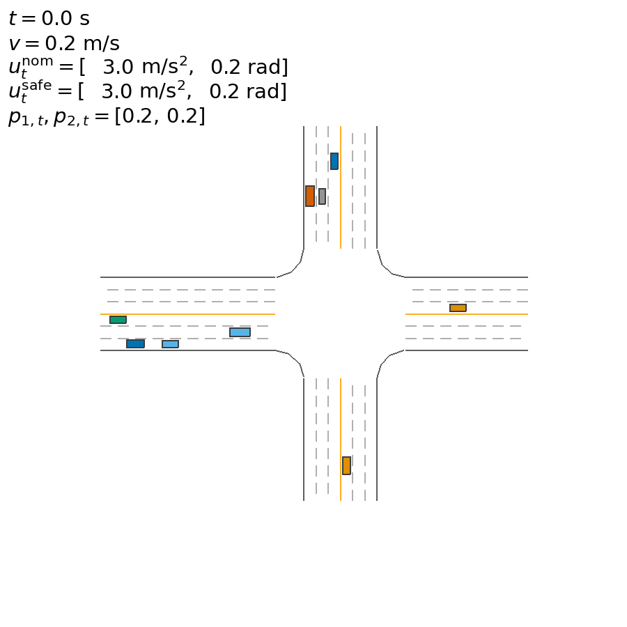
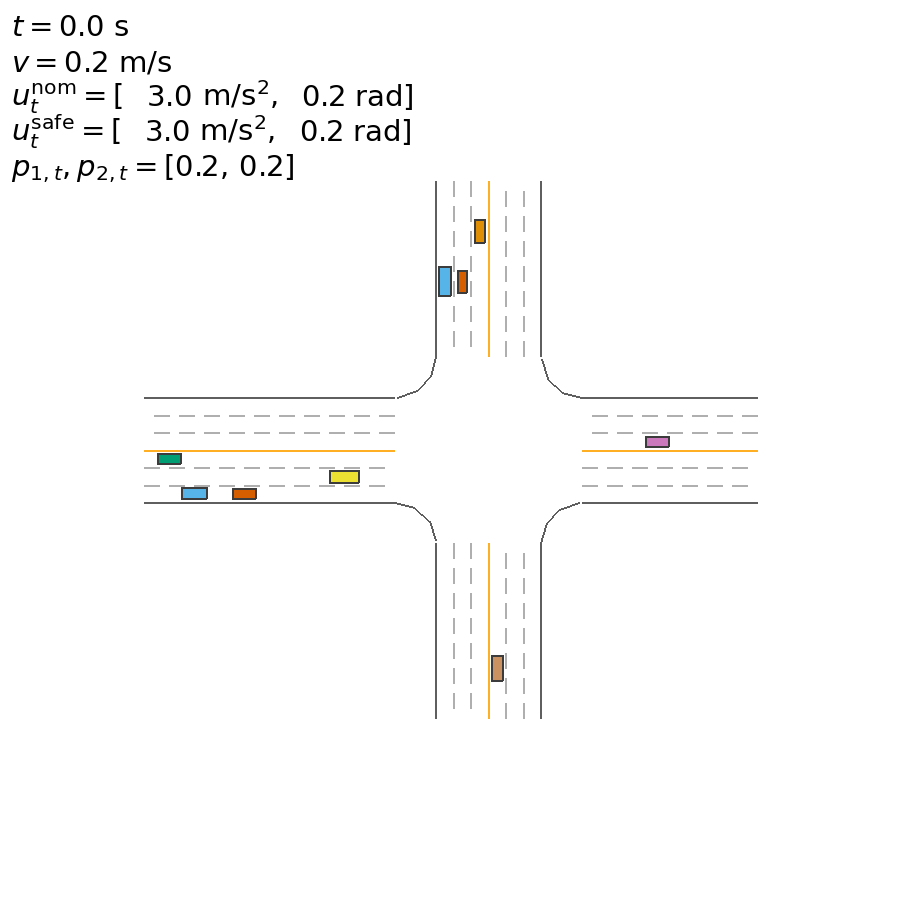

PROPOSED研究方法
ASFCRL
策略动作经过 ASF 机制处理后进入环境执行，形成完整的安全决策链路。
- 01 策略输出
- 02 ASF 介入
- 03 动作执行
A
研究采用控制变量式的消融对照：保持场景与策略任务一致，仅比较 ASFCRL 与移除 ASF 的配置，从动态轨迹中观察决策差异。
将 ASF 作为唯一核心对照变量，使定性观察聚焦于安全机制本身，而不是场景差异。
策略动作经过 ASF 机制处理后进入环境执行，形成完整的安全决策链路。
移除 ASF 机制，策略动作直接进入环境，用于识别 ASF 对执行过程的实际影响。
CONTROLLED COMPARISON同一场景 · 同一任务 · 仅 ASF 配置不同
两类场景覆盖不同的交互结构。选择场景，动态影像与下方算法对照将同步切换。
自车需要在横向与纵向交通流之间完成左转决策，动作时机与安全间距共同构成决策难点。

包含 ASF 的完整算法配置。

移除 ASF 的消融算法配置。
用一条清晰的实验链路呈现 ASF 在策略与环境之间所处的位置。
道路结构、周车状态与交互信息进入策略。
策略根据当前观测生成连续控制动作。
ASFCRL 保留该环节，w/o ASF 在此处直接旁路。
最终动作作用于车辆，形成下一时刻状态。
场景同步视频、说明与算法动图随选择同步切换。
对照明确统一采用 ASFCRL 与 w/o ASF 两个算法名称。
论文友好高对比版式适合答辩展示与页面截图引用。